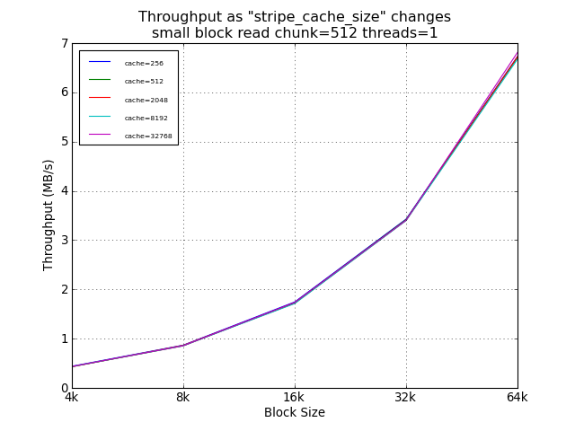
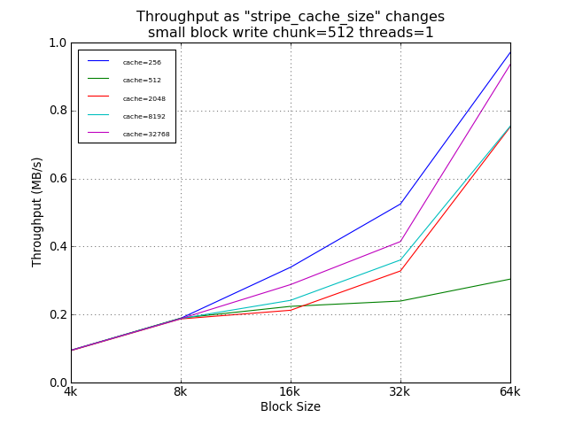
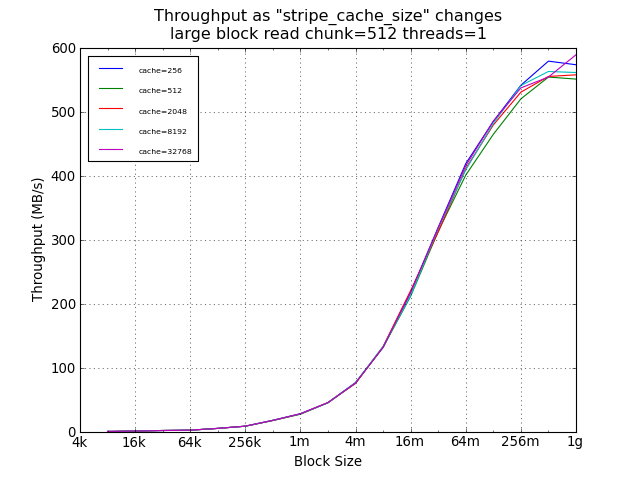
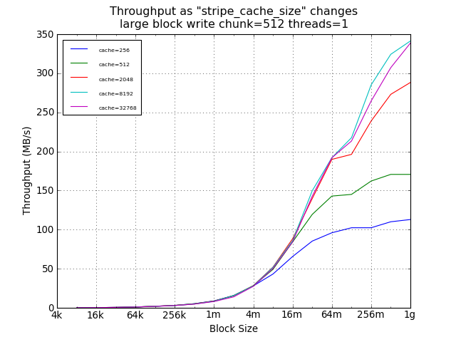
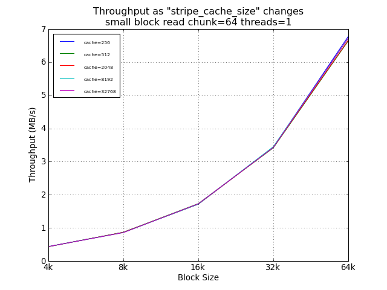
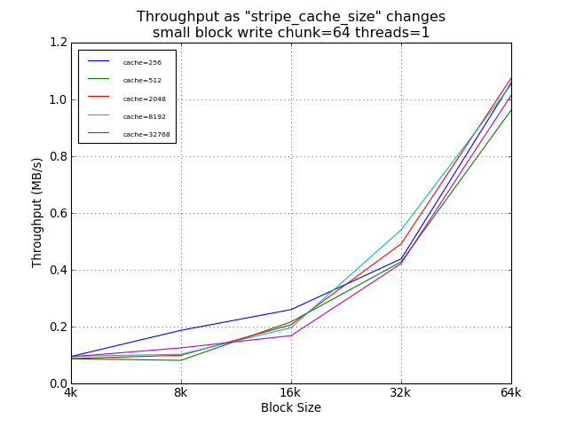
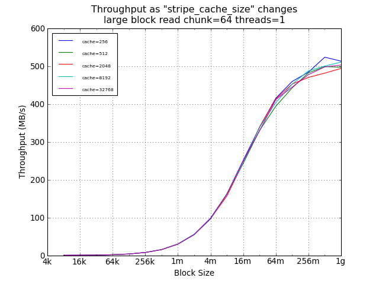
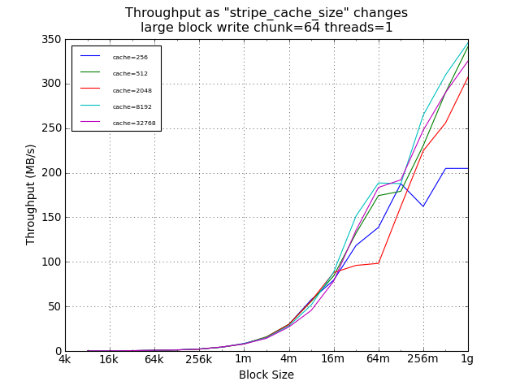

A Comparison of Cache Size for Software RAID-5
Linux Software RAID Performance Comparisons (2012)
The Problem
Various web sites recommend setting
/sys/block/md0/md/stripe_cache_size to 32768 for improved read
performance without providing compelling evidence that changing the
default from 256 has broad benefits.
The Controller
- LSI SAS9211-8i (SAS2008)
- 8 6Gbph ports
- PCIe 2.0
- Chipset: Fusion-MPT
- Linux driver: mpt2sas
- Cost: about $230 from amazon.com
- Configuration: JBOD
The Test System
- Motherboard: Supermicro MBD-H8DCL-IF-O
- Processors: Two 3.3GHz Opteron 4238 (Socket C32)
- RAM: 64GB 1600MHz DDR3 (PC3-12800)
- Slots: PCIe x8 (4000MB/s)
- Drives: Seagate Barracuda 7200 3000Gbytes ST3000DM001
- Drive cage: Supermicro CSE-M35T-1B 5-Bay Enclosure (fits in
three 5-inch chassis bays; sells for about $100-$120 from
newegg.com)
- Debian Wheezy, Linux 3.2.0-3-amd64
The Test Matrix
- Read Percentage: 100% (pure read), 0% (pure write)
- Random Percentage: 100% (random)
- Thread counts: 1
- Small block sizes: 4k, 8k, 16k, 32k, 64k, 128k, 256k, 512k,
1m, 2m, 4m
- Large block sizes: 4k, 8k, 16k, 32k, 64k, 128k, 256k, 512k,
1m, 2m, 4m, 8m, 16m, 32m, 64m, 128m, 256m, 512m, 1024m
- Targets: All 5 driver were tested simultaneously, as well as
each drive individually.
- All small block I/Os are issued using the O_DIRECT flag.
- All large block I/Os use a sequence of 8KB blocks, followed
by an fsync, followed by a seek to the next "large block". This
simulates random I/O at small block sizes and sequential I/O at
large block sizes. By not using O_DIRECT and calling fsync
instead, the Linux block system is tested, which simulated
real-world NFS performance.
- All tests last 30 seconds.
Conclusion
As expected, the setting of stripe_cache_size did not impact read
performance. For random small blocks, a smaller cache was was
helpful, providing a 54% improvement over the suggested 32768.
However, the absolute performance difference at this point was
under 100KB/s.
For large sequential writes, however, the default setting of 256
limited throughput to about 200MB/s, while larger cache sizes
allowed thoughput to scale with write size, with a 59% improvement
for 1GB writes using 32768 instead of 256.
(Not shown here, but availabe in the raw data, the difference for
large sequential writes was smaller with smaller chunk sizes and
larger with larger chunk sizes; with similar anomalies for the
64MB point; and without significant change in peak performance.)
Recommendation: 32768
Small Block Tests Using Default Chunk Size


Large Block Tests Using Default Chunk Size


Small Block Tests Using Legacy Default Chunk Size


Large Block Tests Using Legacy Default Chunk Size

